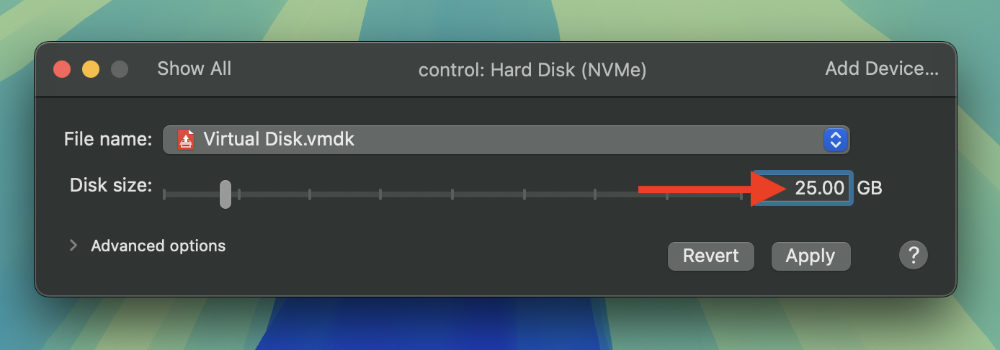

Install Ubuntu Server
Overview
I chose Ubuntu 24.02 as the Linux operating system for installing Kubernetes. Ubuntu Server is one of the most popular Linux distributions and is widely used. You can attempt to use other Linux distributions, but the steps may vary slightly.
Download Ubuntu Server image
First, you need to download the Ubuntu Server 24.02 ISO image based on your local machine's OS architecture:
- If you're on an AMD64 machine, browse to the Ubuntu Releases site and download the 64-bit PC (AMD64) server ISO image
- If you're on an ARM64 machine, browse to the Ubuntu CD Image Releases page and download the 64-bit ARM (ARMv8/AArch64) server ISO image
Install Ubuntu Server on VMware Fusion
I'm using a MacBook with Apple Silicon, so I'll be using VMware Fusion. If you are using VMware Workstation Pro, the steps will differ slightly.
Create new virtual machine
Open VMware Fusion and click File -> New to create a new virtual machine. Double-click the Install from disc or image box in the center of the window.

In the Create a New Virtual Machine window, drag and drop the Ubuntu Server ISO image you downloaded into the Drag a disc image here section. Click Continue.

In the Finish window, click the Customize Settings button to further configure the virtual machine settings. You will be prompted to give the virtual machine a name. Name it control to distinguish it as the control plane node and click Save.
The settings window will open. Click on Hard Disk (NVMe).
Change the size to 25 GB then click Apply.

Start the virtual machine by clicking the Play button.
Ubuntu Server installation
The virtual machine will start and you'll be presented with the Ubuntu Server installer. Press the enter key to Try or Install Ubuntu Server.
Let's go through the installation process step-by-step.

Welcome!
In the Welcome step, select the Language you want to use during the installation process and press the enter key to proceed to the next step.

Keyboard configuration
Review your keyboard Layout and Variant then press the enter key to proceed to the next step.

Choose the type of installation
Keep the Ubuntu Server option selected and press the enter key to proceed to the next step.

Network configuration
By default, the network will be configured to use DHCP. For the Kubernetes cluster nodes, you want to ensure each virtual machine has a static IP address. To do this, you need to manually configure the network settings.
Wait for the network to configure itself and display an IP range for DHCPv4 then tab through to highlight the network interface and press the enter key to edit the network configuration.

In the edit screen, tab through to highlight Edit IPv4, press the return key to edit. Next press enter to change IPv4 Method from Automatic (DHCP) to Manual then press the enter key to proceed to the next step.

Tip
The network interface name and DHCPv4 range may be different for you. Make note of the IP address and the CIDR notation as this will be useful in the next step.
In the network configuration editor, enter your network details which are based on the DHCPv4 range you noted in the previous step. Here is an example of the network settings based on my initial DHCPv4 configuration:
- Subnet:
172.16.25.0/24note the CIDR notation is/24as presented in the screen shot above - Address:
172.16.25.132make sure this is an available IP address within the subnet range - Gateway:
172.16.25.2this is the gateway IP address which is usually the third IP address within the subnet range - Name servers:
8.8.8.8,8.8.4.4these are Google's DNS servers
Danger
Make sure to replace the IP addresses with the correct values based on your network configuration.
Tab through to Save and press the enter key to proceed to the next step.

You should now see the network configuration is set to static. Tab through to Done and press the enter key to proceed to the next step.
Proxy configuration
Keep the proxy settings blank and press the enter key to proceed to the next step.
Ubuntu archive mirror configuration
Wait for the installer to find the best mirror. Once you see "This mirror location passed tests." press the enter key to proceed to the next step.
Guided storage configuration
Keep the default settings then tab through to Done and press the enter key to proceed to the next step.
Storage configuration
Warning
The storage device won't use the entire disk space by default. So you need to edit the storage configuration to use the maximum available space. Otherwise, you may run out of disk space after installing the necessary software and running the server for a while.
In the storage configuration screen, tab through to highlight the ubuntu-lv under USED DEVICES and press the enter key to enable edit.
Tab through to Edit and press the enter key again to edit the storage configuration.

Change the size to the maximum available, then tab through to Save and press the enter key to proceed to the next step.

You should now see the ubuntu-lv device size has been increased to use the maximum available disk space. Tab through to Done and press the enter key to proceed to the next step.
Confirm the storage changes by highlighting the Continue option and press the enter key to proceed to the next step.

Profile configuration
Enter your name, server name, username, and password then tab through to Done and press the enter key to proceed to the next step.

Tip
Use a password that is easy and quick to type because you'll be typing it often.
Upgrade to Ubuntu Pro
Keep the default settings of Skip for now and press the enter key to proceed to the next step.
SSH configuration
Press the space bar to select the Install OpenSSH server option then tab through to Done and press the enter key to proceed to the next step.

Danger
This part is critical. We need this to be able to SSH into the virtual machine from your local machine.
Featured server snaps
Skip the snaps by tabbing through to Done and press the enter key to proceed to the next step.

Installing system
You should see the installation logs as the system is installed. This will take several minutes to complete.

Installation complete!
Once the installation is complete, tab through to Reboot Now and press the enter key to reboot.
Note
You will be prompted to press the enter key to remove the install disk and complete the reboot process.
Clone worker node(s)
Now that you have a control node, you need to create worker nodes. The easiest way to do this is to create a full clone of it.
Shut down virtual machine
Shut down the newly created virtual machine by clicking Virtual Machine > Shut Down from the VMware Fusion menu.
Clone virtual machine
In the VMware Fusion's Virtual Machine Library window, right-click on the control virtual machine and click Create Full Clone.

Give the new machine a unique name and click Save. I used worker-1 to designate that it is a worker node with a number to indicate it is the first worker node.

Press the Play button to start the cloned virtual machine and log in.
Change hostname
Once you've logged in to the cloned virtual machine, you'll notice the hostname is the same as the control node. Change this with the following command.
sudo hostnamectl hostname worker-1
Note
Make sure to replace worker-1 with the hostname you want to use for the worker node.
Change static IP address
The cloned virtual machine is also configured with the same IP address as the control node. It will need to be configured with a new static IP address.
Run the following command to open the netplan configuration file.
sudo vim /etc/netplan/50-cloud-init.yaml
Tip
Press i to enter Vim's insert mode then use your arrow keys to navigate to the IP address and change it to use next available IP address in the subnet range.
Here is what the file should look like after you've made the changes.
network:
version: 2
ethernets:
ens160:
addresses:
- "172.16.25.133/24" # Change this to the next available IP address
nameservers:
addresses:
- 8.8.8.8
- 8.8.4.4
search: []
routes:
- to: "default"
via: "172.16.25.2"
Danger
The IP address of my control virtual machine was 172.16.25.132/24 so the IP address of the worker-1 virtual machine should be 172.16.25.133/24. Your IP address will be different based on your network configuration so make sure to use the next available IP address in your subnet range.
After you've made the changes, save the file.
Tip
To write your changes and quit Vim, press Esc to exit insert mode, type :wq to save the file
Apply the changes by running the following commands.
sudo netplan generate
sudo netplan apply
Reboot the virtual machine
Reboot the virtual machine to apply the changes.
sudo reboot
You should now have a new hostname and static IP address assigned to your cloned virtual machine.
Warning
If you wish to create more worker nodes, shut down the worker node and repeat the cloning steps. Just make sure each cloned node has a unique hostname and static IP address.
Post installation
Let's make sure the virtual machines are set up correctly.
Note
Make sure all virtual machines are powered on.
Log into virtual machine
Log into each virtual machine using the username and password you set up during the installation process.
You will see the IPv4 address that has been assigned to your virtual machine. Make a note of this as you'll need it to SSH into the virtual machine from the host machine.

SSH into virtual machine
With the virtual machine's IP being NAT'd from the host machine, it will be accessible from the host using the static IP address. Open a terminal on your host machine and SSH into the virtual machine.
When prompted, type yes to add the virtual machine to the list of known hosts, enter your password, and you should be logged into the virtual machine.
Edit hosts file
To make it easier to SSH into the virtual machines without having to remember the IP addresses, run the following command to edit your /etc/hosts file and include the new hostnames and IP addresses of each virtual machine you created.
sudo vim /etc/hosts
This is what my /etc/hosts file looks like after adding the hostnames and IP addresses of the virtual machines.

Note
Your IP addresses may be different based on your network configuration.
Now you can SSH into each virtual machine using hostnames.

Warning
Test to make sure you can SSH into each virtual machine from the host machine.
Take a snapshot
At this point, it's recommended to take a snapshot of each virtual machine. This way, if you make a mistake or something goes wrong, you can revert back to a known good state.
In the VMware Fusion Virtual Machine Library window, right-click each virtual machine name and click Snapshots. From there, click on the snapshot icon to take a snapshot. Give it a descriptive name like before-k8s-install so you know what state the virtual machine is in.
Note
Taking snapshots should take up about 4-5GB of disk space per virtual machine so make sure you have enough disk space available.